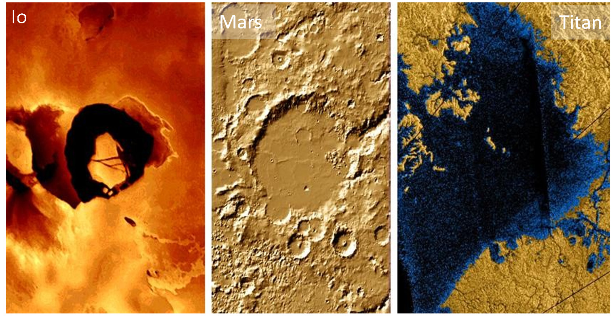
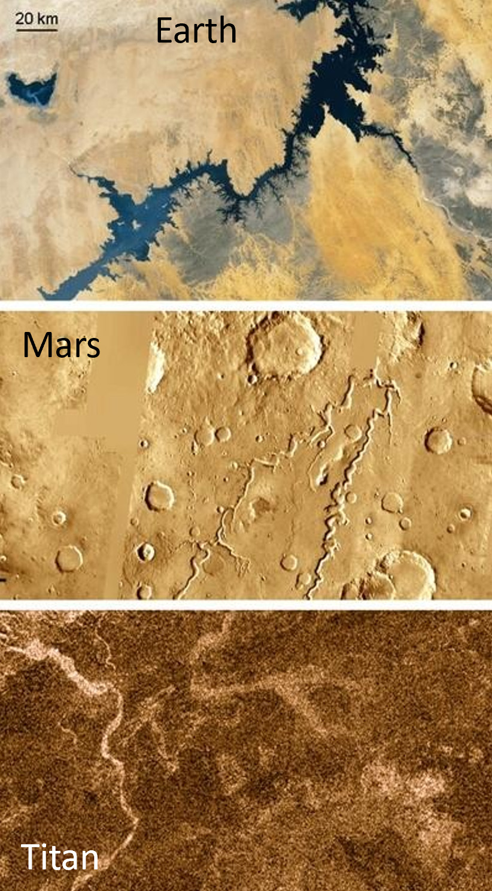
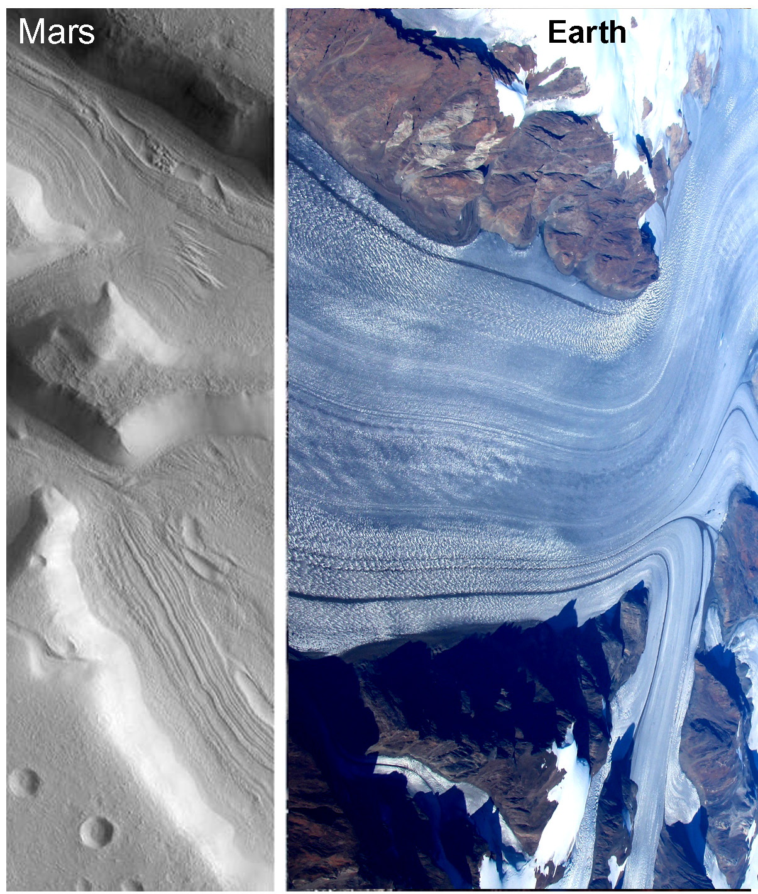

Abstract
Comparative evaluation of landforms for Earth and space science university was to widen their knowledge, strengthen the “universal” role of natural sciences, and make them familiar with the interpretation of satellite images. Similar types of landforms on different bodies provided a useful tool to understand phase differences and the role of environmental conditions on the realization of various physical and chemical processes.
Introduction
A wide range of surface landforms has been discovered recently by various space missions. Volcanoes, river channels, polar ice caps, dunes, and fallen boulders are present on several planets and moons, among others. Their comparative evaluation could fit into the education of geography and environmental topics for secondary school students. We developed several examples of how properly collected and arranged images help to discover and understand origins and processes beyond the Earth, what also helps to show the general existence of the same physical laws in the Universe.
Methods
During the development of this curriculum, we produced visualization materials (see some example figures in this work) to compare various landforms on different planetary bodies. Used literature based data, the classification of these landforms happened (using unified definitions, listed in the scientific sources), comparison the same types on different bodies happened (to demonstrate similarities and differences, plus link their characteristics to specific local conditions), identification of the formative roles of them (using published results) and also comparison of different groups were done (focusing on the different formative roles and environmental conditions). There were also such landforms whose origin is not clearly known, however listed as candidate formation mode(s). Numerical values were also used and considered, which provide further information on comparisons, beside the context.
Results
Before the developed of the curriculum for planetary science education in Hungary, a classification on review of landforms with specific focus on comparative aspects was originally published in the Encyclopaedia by Sringer (Hargitai and Kereszturi 2015). Opposite to the regular astronomy classes, where various planetary bodies are discussed separately (like presentation of volcanic, tectonic, etc. landforms separately for Venus and separately for Mars), in this curriculum we are discussing various landforms according to groups, for example, all volcanic landforms in one topic or class, all fluvial landforms in another topic or class, etc.
Among the main messages to be given, several important ones are listed below according to the given group of landforms. In an ideal case, the presentation covers geography and physics or astronomy aspects together. It is important that the basis of discussion uses the geography knowledge from secondary school, what exists at almost all university students. The example topics listed below provide a quick overview of how various landforms should be presented jointly and discussed together. A sample figure to see the similar, analogous nature of the mountain-like elevations from different planets and moons is in a conference proceeding of Kereszturi et al. (2012) https://www.lpi.usra.edu/meetings/lpsc2012/pdf/1778.pdf
Volcanic (and volcanic-like) activity, including the signatures of past activity, can be identified in many object. Volcanic plains can be found on Mercury, Venus, Earth, Moon, Mars, Io, Triton, small parts on Europa and Ganymede, uncertain indications on Ceres and Titan, while active eruptions are going on in the case of the Earth, Io, Enceladus, Triton, and possibly on Venus (where only indirect evidence has been observed yet). A wide range of similarities can be observed, especially among the silicate volcanism-related landforms, including lava flows, lava plains, centralized volcanic elevations like shields and steeper cones, as well as central craters and calderas. The comparative aspects covered why there are not as large volcanoes on Earth as present on Mars, what is related to the lower gravity (smaller mass), thinker crust, and lack of plate movements above hot spots.

| Planetary body | Tectonic processes | Volcanic processes | ||
|---|---|---|---|---|
| Crust formation | Crust consumption | Effusive | Explosive | |
| Mercury | – | Not much; small compressional folds (Valle et al. 2015) | Lava plains, flow features | Brighter halos along vents (Head et al. 2009) |
| Venus | Spreading ridges resembling those on Earth at mid-ocean locations | Subduction-indicative topographic profiles along landform boundaries | Lava plains, flow features | Unknown and improbable; pyroclasts are rare or absent (Airey et al. 2015) |
| Earth | Mid-ocean ridges and continental rifts | Subduction, obduction, compressional folded hills | Lava plains, flow features | Pyroclastic deposits |
| Moon | – | Not much; small compressional folds | Lava plains, flow features | Brown-reddish pyroclastic patches (Stutton et al. 2026) |
| Mars | Uncertain ancient signature of spreading-related magnetized stripes | Only compression without consumption (Thaumasia Plateau) | Lava plains, flow features | Patera (Bartosz et al. 2026); kilometre-sized cones at lava–ice interaction |
| Ceres | – | – | Ahuna Mons containing patches | Some hydrated salt patches possibly of explosive origin (Yumoto et al. 2023) |
| Io | – | Indirect signature of compression and mountain blocks | Lava plains, flow features | Large ejection clouds |
| Europa | Earth-like spreading | Underplating (?), few signatures | Not many observable features | Indirect signs of ejecta plumes |
| Ganymede | Earth-like spreading linked to global extension | – | Few plastic flow features | – |
| Titan | – | – | Some uncertain features | – |
| Enceladus | – | – | – | Jets by eruption |
| Triton | – | – | Plains | Jets by eruption |
| Pluto | – | – | Large central cones | – |
Fluvial features (including valleys, channels, filled lakebeds, delta-like sedimentary features, shorelines, and indications of large standing liquid bodies) were identified on the Earth, Mars, and Titan; while in the last two bodies, most of these landforms are not filled by liquid currently, these features are clearly indicative of liquid flow-like erosion, transport, and deposition in the past. All of these landforms strongly resemble each other in morphology, roughly in physical size, interconnectivity, and context. Important and general physical laws working on all three bodies, which could be presented are:
- 1. gravity driven movement in a downward direction,
- 2. Erosion of surface material that cuts elongated depressions,
- 3. Interconnected and hierarchical network structure that became wider both as channels and valleys by accumulation of liquid discharge in the flow direction,
- 4. Deposition happens at the decreased surface slope units, producing accumulation there.
- 5. Fluvial delta features at such locations contain Gilbert-type deltas on Mars, indicating the depth of the formerly existing standing liquid body there.

Polar caps might exist even on the surface of airless bodies too, where are icy patches in the polar regions at the permanently shadowed locations (depressions without solar illumination ever). There are such features inside the darkest polar craters of Mercury and the Moon. Here, the weaker illumination and lower polar temperature allow the accumulation and retention of ice. Not a polar cap, but the high-elevation condensation-produced radar-bright mountain “caps” features on Venus, which are composed of certain metals. On this hot body, such elevated melting temperature materials could condense at high-elevation peaks, like high-mountain snow on hills of the Earth.
| Planetary body | Flowing liquids | Standing liquids | Creeping ice | Polygonal icy features |
|---|---|---|---|---|
| Mercury | Lava channels | – | – | – |
| Venus | Lava channels (Ian et al. 2025) | – | – | – |
| Earth | Fluvial channels and valleys; lava channels, many currently active | Lakes and seas, many currently active | Glaciers, many currently active | Patterned ground in high-latitude regions, many currently active |
| Mars | Dry fluvial channels and valleys; lava channels | Dry lakebeds, shorelines, and large filled basins | Glacier-like landforms (LDA, LVF, CCF) beneath dry regolith cover | Wide variety of polygonal terrain, mainly at middle and high latitudes |
| Ceres | – | – | Not yet observed but possible | Some polygon-shaped craters with no clear ice relation (Zeilnhofer & Balow 2021) |
| Io | Elongated and curved lava channels without observable depressions | Loki lava lake | – | – |
| Europa | – | – | Ice plate movement, fracturing, and consumption | – |
| Ganymede | Very few short lava flow-like features | – | Spreading-like ice formation between dark plates | – |
| Titan | Fluvial channels (dry except in polar regions) | Lakes, shorelines, and currently liquid-filled polar lakes | – | – |
| Enceladus | – | – | Ice deformation by tectonic movements | – |
| Triton | – | – | Within the cells of the Cantaloupe Terrain | Patterned ice features possibly related to deformation |
| Pluto | – | – | Glacial flow-like processes at Sputnik Planum (Umurhan et al. 2017) | Nitrogen-ice polygons formed by local convection |

Source 1 and Source 2)Discussion
In addition to the comparative aspects emerges in the table, the presentation could be arranged into a sequence of order according to the gradual change of various parameters, to demonstrate their role in another way. The following chain of discussions provides some examples of the consequences of variable parameters:
- • Role of atmospheric pressure on the rate of explosive versus eruptive styles of volcanic activity. Considering magma with similar temperature and gas content, the explosivity depends on the atmospheric pressure as serves as a closing pressure: in case of large pressure (like Venus) the bubble formation inside ascending magma bodies is supressed, shifting the activity toward an effusive instead of eruptive style. Mars is around the other “end “ of the scale with a larger role of eruptive style, but mainly for the early wet periods, producing large and low shield like paterae.
- • Volcanic features show many similarities despite the diverse conditions under which they emerge, including similar characteristics even on airless bodies, indicating that the main driver of landform characteristics is related to the properties of magma and lava, but not the surroundings they erupt into. Gravity also does not influence these landforms much, probably as gravity modifies the speed of magma rising and the flow of lava, but not they main rheological properties what are determined by composition and erupting temperature.
- • The role of temperature on the liquid state of materials could be analysed for Earth, Mars, and Titan. While on Earth bulk-phase liquid water remains in the fluid state at the 0-100 Celsius temperature range, on Mars because of the low average temperature and general humidity, only brines (salty water solutions) remain in the fluid state. On Titan, around -180 degrees Celsius, methane is in the liquid phase, while H2O forms the solid surface. Such comparative aspects improve the understanding of phase states for different material.
- • The role of gravity in absolute topographic elevation can be seen with the elevation of the largest volcanic cones compared on Earth and Mars in a somewhat complex way. The gravity influences much more the eruption could heights also. While on Io (g=0.18 Earth g), the gravity is much lower than on Earth, causing only a small part of the ejected clouds’ material not to fall back to the surface, while on Enceladus (g=0.11 Earth g), a larger part of the jets shoot into space.
Applied aspects emerged in two parts of the curriculum: ArchiSpace project-based regolith evaluation of ISRU activities (Kereszturi et al. 2026), including habitat building, and web-based GIS usage by the students – both topics are discussed elsewhere (HIV). Several further topics, such as mass movements, have not been covered in this work; however, there are established presentation modes for them. For further information, the author welcomes requests via email from the readers.
Conclusion
Comparative landform analysis was highly useful in explaining the role of environmental parameters for university students. The evaluation of various volcanic, tectonic, fluvial, glacial, and mass wasting produced etc. features not openly widen the knowledge of students but also encourage them to search for further information by themselves. This topic is also ideal for homework, in which students could find and compare various images or even web-GIS-based appearance of different landforms. A further beneficial aspect of landform analysis is that it fits well with both astronomy and Earth science domains at universities.
Acknowledgement
This work was supported by the EuroPlanet CEU HUB subunit.
References
- Airey, M. W., Mather, T. A., Pyle, D. M., Glaze, L. S., Ghail, R. C., & Wilson, C. F. (2015). Explosive volcanic activity on Venus: The roles of volatile contribution, degassing, and external environment. Planetary and Space Science, 113–114, 33–48.
- Bartosz, P., Thomas, J., & Chiedozie, O. C. (2026). Late Amazonian-aged volcanic cones of explosive origin in Ceraunius Fossae, Tharsis, Mars. Icarus, 445, 116870.
- Flynn, I. T. W., Crown, D. A., Ashley, K. T., & Ramsey, M. S. (2025). Channelized lava flows on Venus: New insights into distribution, morphology, rheology, and emplacement processes. 56th Lunar and Planetary Science Conference, Abstract 1575.
- Head, J. W., Murchie, S. L., Prockter, L. M., Solomon, S. C., Chapman, C. R., Strom, R. G., Watters, T. R., Blewett, D. T., Gillis-Davis, J. J., Fassett, C. I., Dickson, J. L., Morgan, G. A., & Kerber, L. (2009). Volcanism on Mercury: Evidence from the first MESSENGER flyby for extrusive and explosive activity and the volcanic origin of plains. Earth and Planetary Science Letters, 285(1–2), 227–242.
- Hargitai, H., & Kereszturi, A. (Eds.). (2015). Encyclopaedia of planetary landforms. Springer.
- Kereszturi, A., & Pentek, K. (2012). New planetary science course at the University of Western Hungary. In 43rd Lunar and Planetary Science Conference. Retrieved July 2, 2026, from https://www.lpi.usra.edu/meetings/lpsc2012/pdf/1778.pdf
- Kereszturi, A. (2026). Planetary science education in Hungary: Interdisciplinary methods at university level. In Proceedings of the 3rd International Conference on Universe (Online, March 4–6, 2026, Abstract #161638).
- Kereszturi, A. (2026). Mission planning and planetary science education at ELTE. In Proceedings of the 9th International Conference on Research, Technology and Education of Space (Budapest, Hungary).
- Kereszturi, A., Ori, G. G., Allemand, P., Bacaoui, A., Bier, H., Ribeiro, T., & Correia, M. (2026). Joint glossary for planetary scientists and architects: Interdisciplinary attempt under the ArchiSpace project. In Proceedings of the 3rd International Conference on Universe (Online, March 4–6, 2026, Abstract #28935).
- López, V., Ruiz, J., & Vázquez, A. (2015). Evidence for two stages of compressive deformation in a buried basin of Mercury. Icarus, 254, 18–23.
- Sutton, S. R., Lanzirotti, A., Newville, M., Dyar, M. D., & McCanta, M. (2026). Complex redox histories of lunar pyroclastic beads revealed by spatially correlated chromium and vanadium valences. Journal of Geophysical Research: Planets, 131(5), e2025JE009416.
- Umurhan, O. M., Howard, A. D., Moore, J. M., Earle, A. M., White, O. L., Schenk, P. M., Binzel, R. P., Stern, S. A., Beyer, R. A., Nimmo, F., McKinnon, W. B., Ennico, K., Olkin, C. B., Weaver, H. A., & Young, L. A. (2017). Modeling glacial flow on and onto Pluto's Sputnik Planitia. Icarus, 287, 301–319.
- Yumoto, K., Cho, Y., Koyaguchi, T., & Sugita, S. (2023). Dynamics of gas-driven eruption on Ceres as a probe to its interior. Icarus, 400, 115533.
- Zeilnhofer, M. F., & Barlow, N. G. (2021). The characterization and distribution of polygonal impact craters on Ceres and their implications for the Cerean crust. Icarus, 368, 114586.